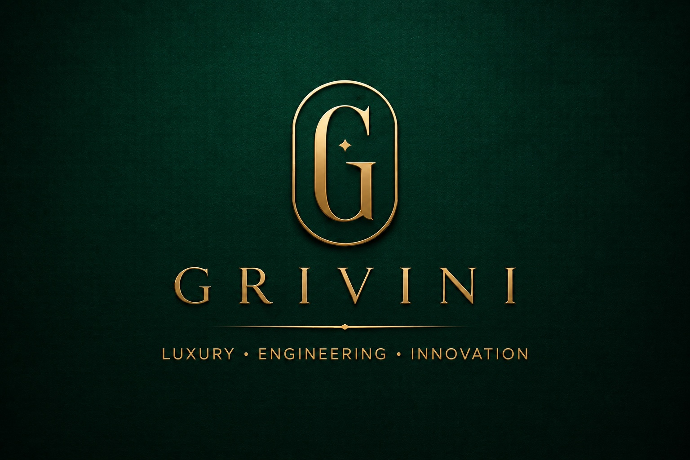

Orbit visualization
Explore satellite motion, UE geometry, links and key NTN measurements in one focused workspace.
Launch toolGrivini builds premium engineering software for wireless communications, satellite systems, visualization and intelligent analysis.

An interactive visualization tool for 3GPP non-terrestrial network orbital information, satellite trajectories, ground geometry, ephemeris and delay metrics.
Explore satellite motion, UE geometry, links and key NTN measurements in one focused workspace.
Launch toolTurn complex orbital and wireless parameters into a visual workflow that is easier to inspect and explain.
Additional Grivini engineering tools can be added later without changing the website foundation.